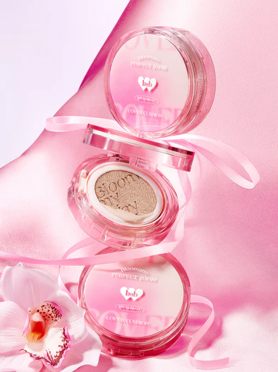

barenbliss
barenbliss, dikenal pula sebagai bnb, adalah salah satu merek produk kecantikan (kosmetik) asal Korea Selatan yang diluncurkan di pasaran Indonesia pada 25 Agustus 2021. Merek ini memasuki pasaran tanah air menyusul meningkatnya popularitas K-Beauty di Indonesia. K-beauty sendiri yang merupakan bagian dari Gelombang Korea dan kepopulerannya turut dipengaruhi oleh fenomena K-pop dan K-drama. Merek ini didirikan oleh Kim Jina dan produk-produknya diklaim tidak mengandung alkohol.
MOST WANTED


"B+N+B"
CLEAN PHILOSOPHY
Kami berkomitmen pada filosofi Clean Beauty dan telah membuat daftar 2000 bahan yang dilarang dan bebas dari risiko dan kekejaman pada tingkat formulasi. Produk kami selalu diuji secara dermatologis untuk memastikan keamanannya.
Kami berdedikasi untuk mengeksplorasi bahan-bahan vegan yang berasal dari alam. Gerakan kecantikan ramah lingkungan kami memimpin jalan menuju kecantikan yang berkelanjutan dengan meningkatkan kemasan ramah lingkungan.
Kecantikan adalah ketika Anda merasakan kebahagiaan dengan diri Anda sendiri. Kami menawarkan momen pengalaman sensorik dengan tekstur yang mengagumkan, aroma yang lezat, dan desain yang penuh perhatian yang membawa kebahagiaan di luar imajinasi.
OUR PRODUCTS


JOYFUL CLEAN BEAUTY
barenbliss, merek kecantikan bersih profesional yang lahir dari Seoul, Korea. Pendiri barenbliss, Jina KIm memiliki keyakinan bahwa setiap orang memiliki hak untuk menikmati "Joyful Clean Beauty" yang vegan, bebas dari kekejaman, dan tidak beracun yang menghasilkan filosofi bersih "B+N+B".